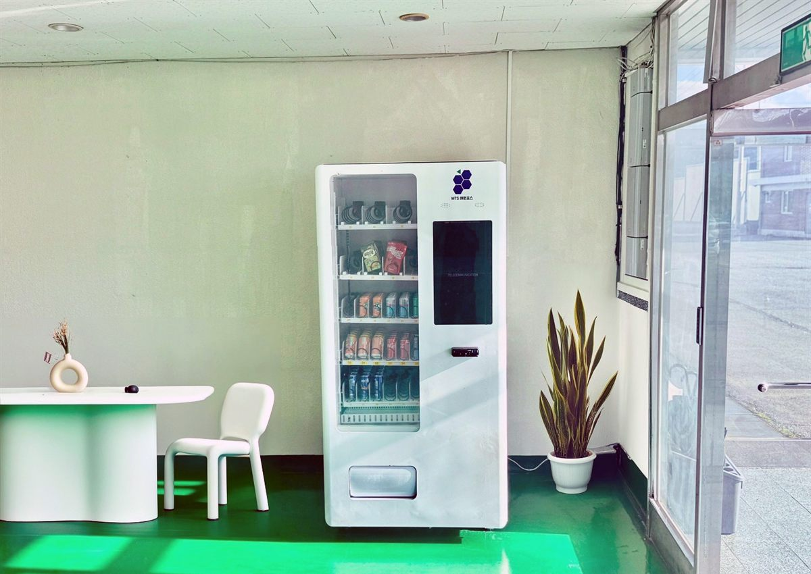

공장 자판기는 하루 종일 조금씩 팔리는 물건이 아닙니다. 교대가 끝나고 다음 조가 들어오기까지의 그 10분에 거의 전부가 팔립니다. 그래서 자리를 고르는 기준도 사무실이나 상가와 완전히 다릅니다. 눈에 잘 띄는 자리가 아니라, 짧은 쉬는 시간 안에 왕복할 수 있는 자리여야 합니다. 이번 현장은 작업동과 사무동 사이에 현관이 있고, 그 옆에 테이블 하나를 둔 작은 휴게 공간이 있는 구조였습니다.
처음에 사장님이 생각하신 자리는 2층 휴게실 안쪽이었습니다. 자리는 넓지만 계단을 오르내려야 해서 뺐습니다. 쉬는 시간이 짧으면 사람은 한 층만 올라가도 그냥 참습니다. 대신 잡은 곳이 사진에 보이는 현관 유리문 바로 옆 벽면입니다. 작업복 차림으로 나오는 길에 그대로 지나는 자리이고, 옆에 테이블이 이미 있어 뽑아서 바로 앉을 수 있는 흐름이 만들어집니다. 그다음 본 것이 전기였습니다. 공장은 전체 용량은 넉넉해도 생활용 콘센트는 청소기와 온수기 기준으로 잡혀 있는 경우가 많아, 냉장 압축기를 종일 돌리려면 어느 분전반에서 나온 회로인지를 먼저 봐야 합니다. 관리 담당자와 함께 확인하고 여유 있는 회로로 연결했습니다. 마지막은 수평입니다. 공장 바닥은 대개 에폭시로 마감하는데, 보기엔 평평해도 물 빠짐을 위해 미세하게 기울어 있는 곳이 많습니다. 다리를 하나씩 돌려 잡고, 출입문 쪽으로 쏠리지 않는지 두 번 확인했습니다.
부평 산업단지 공장에 맞는 구성
기계는 냉장 음료 자판기 한 대로 시작했습니다. 공장은 품목을 넓게 벌리기보다 잘 나가는 몇 가지를 끊기지 않게 두는 쪽이 맞습니다. 생수와 이온음료 칸을 가장 넓게 잡고, 캔커피와 탄산, 에너지드링크를 그다음으로 뒀습니다. 여름에 가장 많이 빠지는 것은 생수와 이온음료이고, 이 두 칸만 비어도 "저기 자판기 비었더라"는 말이 바로 돕니다. 간식은 처음부터 넣지 않고, 몇 주 판매를 본 뒤 남는 칸에 넣기로 했습니다.
채워 넣는 양은 교대 시간표에 맞췄습니다. 하루 중 판매가 거의 없는 구간이 길고, 대신 교대 전후와 점심시간 직후에 몰리는 형태라 평균으로 보면 재고 계산이 어긋납니다. 그래서 앱으로 시간대별 판매를 먼저 며칠 보고 칸 배분을 다시 잡았습니다. 결제는 카드와 삼성페이·카카오페이·네이버페이를 받게 하고 현금함은 넣지 않았습니다. 작업복에 지갑을 넣고 다니는 분이 거의 없고, 현금함이 없으면 수금하러 갈 일도 사라집니다. 겨울에는 온음료 칸으로 전환할 수 있게 해 두었습니다. 야외 작업이 섞인 공장은 날이 추워지면 따뜻한 캔커피 쪽으로 수요가 확 넘어갑니다.
공장 자판기, 좋은 점과 어려운 점
좋은 점은 사람이 바뀌지 않는다는 것입니다. 상가 자판기는 오늘 지나간 사람이 내일 또 온다는 보장이 없지만, 공장은 같은 인원이 같은 시간에 같은 길로 지납니다. 그래서 며칠만 지나도 하루 판매량이 거의 일정하게 나오고, 채우러 가는 주기를 정하기 쉽습니다. 실내라 기계가 상하지 않는 것도 큽니다. 비바람과 직사광선을 타지 않고, 출입 통제가 되는 사업장이라 파손이나 도난 걱정이 거의 없습니다. 복지 측면에서도 편의점까지 다녀올 수 없는 짧은 쉬는 시간을 메워 준다는 점에서 반응이 나쁘지 않습니다.
어려운 점도 그대로 적겠습니다. 첫째는 주말과 휴무입니다. 공장이 쉬는 날은 판매가 사실상 없습니다. 명절 연휴나 여름 휴가철처럼 길게 쉬는 기간에는 유통기한이 짧은 품목을 미리 빼 두어야 합니다. 둘째는 구매 시간이 몰리는 것입니다. 짧은 시간에 여러 명이 줄을 서니, 좁은 통로에 놓으면 지나다니는 길을 막습니다. 자리를 잡을 때 기계 앞에 두세 사람이 설 여유를 꼭 함께 봐야 합니다. 셋째는 분진과 기름입니다. 작업동과 바로 붙은 자리는 공기 중 분진이 기계 통풍구에 쌓입니다. 현관 쪽을 고른 데에는 이 이유도 있었고, 그래도 통풍구 청소 주기는 사무실보다 짧게 잡으시는 편이 안전합니다. 넷째는 안전 통로입니다. 소화전이나 비상구 앞을 막으면 안 되므로, 벽면 폭을 잴 때 이 부분을 같이 확인합니다.
부평 무인매장, 이런 자리가 잘 됩니다
부평구는 인천에서도 공장과 주거지가 바로 붙어 있는 구조라 자판기 자리가 나오는 성격이 두 갈래입니다. 첫째는 산업단지입니다. 부평국가산업단지가 청천동·갈산동 일대에 자리 잡고 있고, 그 주변으로 협력업체와 중소 제조업체가 촘촘하게 들어서 있습니다. 이런 곳은 직원 수가 정해져 있고 교대 시간이 규칙적이라, 이번 현장처럼 현관이나 휴게 공간 한 자리만 잡아도 판매가 안정적으로 나옵니다. 단지 안 도로를 따라 작은 공장이 이어지는 구간은 한 번 나가서 여러 곳을 같이 보는 상담이 자주 나옵니다.
둘째는 사람이 많이 지나는 역세권입니다. 부평역은 경인선과 인천 1호선이 만나는 자리라 오가는 사람이 많고, 역과 이어진 부평역 지하상가와 부평문화의거리 일대는 인천에서 손꼽히는 상권입니다. 인천 1호선 부평구청역·부평시장역·동수역·부평삼거리역과 7호선 산곡역·굴포천역·삼산체육관역을 따라서도 상가가 이어집니다. 부평종합시장 주변, 삼산월드체육관과 굴포천 일대, 그리고 산곡동·청천동의 대단지 아파트와 그 상가도 문의가 꾸준합니다. 공장 쪽은 직원 복지로, 상가 쪽은 무인 운영으로 접근이 갈린다고 보시면 됩니다.
부평 서비스 지역
부평구 — 부평1동 · 부평2동 · 부평3동 · 부평4동 · 부평5동 · 부평6동 · 산곡1동 · 산곡2동 · 산곡3동 · 산곡4동 · 청천1동 · 청천2동 · 갈산1동 · 갈산2동 · 삼산1동 · 삼산2동 · 부개1동 · 부개2동 · 부개3동 · 일신동 · 십정1동 · 십정2동
산업단지 — 부평국가산업단지 · 청천동 공장지대 · 갈산동 일대 중소 제조업체
역 — 부평역 · 백운역 · 부평구청역 · 부평시장역 · 동수역 · 부평삼거리역 · 산곡역 · 굴포천역 · 삼산체육관역
주요 시설 — 부평역 지하상가 · 부평문화의거리 · 부평종합시장 · 삼산월드체육관 · 부평구청 · 굴포천
인접 — 계양구 · 서구 · 남동구 · 미추홀구 · 경기 부천 중동 · 상동 · 역곡
인천 전역(중구 · 동구 · 미추홀구 · 연수구 · 남동구 · 계양구 · 서구 · 강화 · 옹진)과 경기 부천 · 김포까지 같은 조건으로 나갑니다.
부평 무인창업, 이렇게 시작하시면 됩니다
설치비는 받지 않습니다. 자리 확인부터 품목 구성, 기계 반입, 카드 결제 연동, 재고 채우는 방법까지 한 번에 안내해 드립니다. 공장이나 사업장에 놓는 자리는 직원 복지로 두는 경우와 외부 운영자가 자리를 빌려 두는 경우가 나뉘는데, 어느 쪽이냐에 따라 전기 요금 처리와 품목 구성이 달라지니 상담 때 먼저 말씀해 주시면 빠릅니다. 견적 전에 확인하는 것은 전기 회로·벽면 폭·반입 경로 세 가지입니다. 공장은 현관 턱이나 방화문 폭에서 걸리는 일이 있어, 문 폭과 턱 높이를 미리 재어 두면 설치 당일에 일이 멈추지 않습니다. 자리 사진 한 장과 대략의 벽면 폭만 보내 주셔도 들어갈지 아닐지는 미리 봐 드립니다.
비용은 구입이 렌탈보다 유리한 편입니다. 렌탈료를 몇 년 내는 것보다 처음에 사 두는 쪽이 총액이 낮게 나오는 경우가 많고, 오래 쓸수록 차이가 벌어집니다. 특히 공장처럼 한번 놓으면 자리를 옮길 일이 거의 없는 곳은 구입 쪽이 더 맞습니다. 구성별 36개월 총비용은 구입 vs 렌탈 비교 가이드에 정리해 두었습니다.
부평 무인자판기 설치 상담
세워 둘 자리 사진 한 장만 보내 주셔도 됩니다. 남는 벽과 전기 회로, 반입 경로를 보고 들어갈 수 있는 크기와 대수를 먼저 봐 드린 뒤 견적을 보내 드립니다.
※ 사진은 픽포스가 시공한 설치 사례이며, 글에 적힌 지역의 현장 사진은 아닙니다. 자판기 구성과 품목은 자리와 업종에 따라 달라지며, 공장·사업장 설치는 전기 회로 여유와 반입 경로, 안전 통로 확보 조건을 현장에서 먼저 확인합니다. 정확한 금액은 견적서로 안내드립니다.